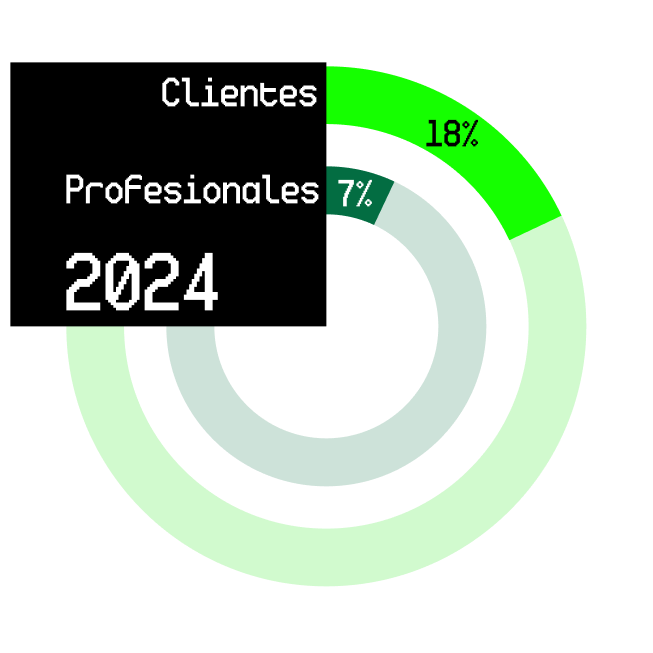
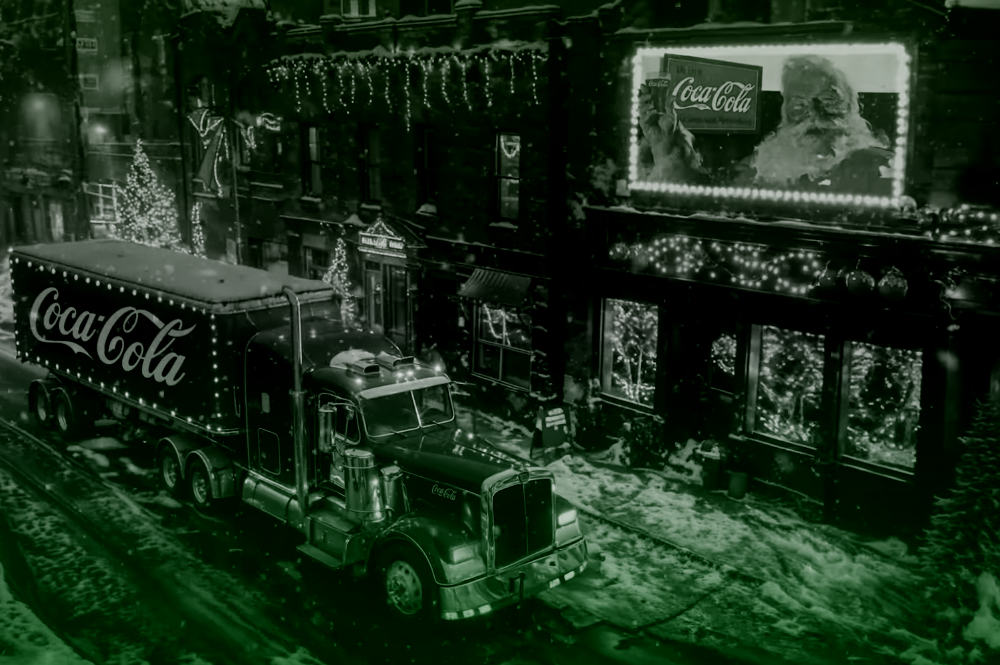
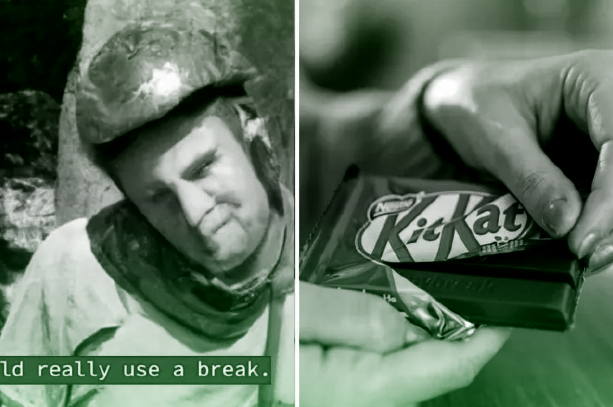
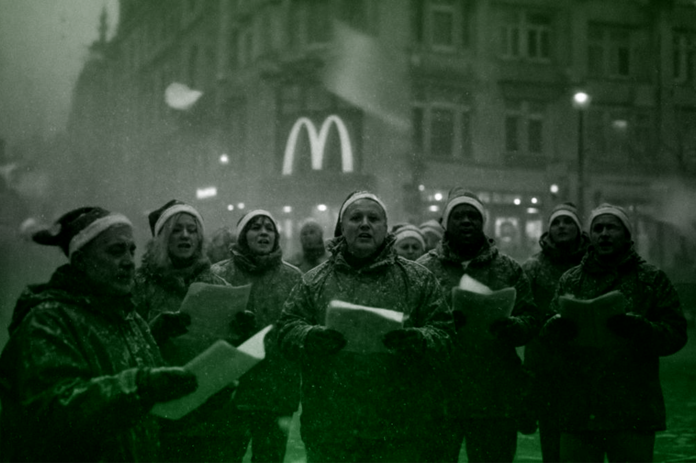
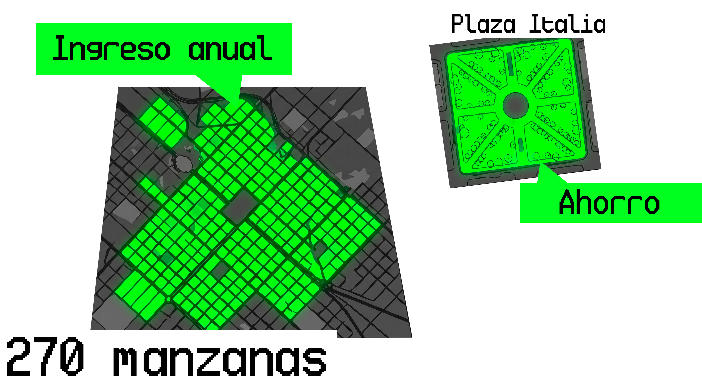

¿Por qué los usuarios rechazan el uso de la IA en publicidad?
La respuesta correcta es:
Crecimiento del uso de la IA en publicidad
2022-2026
Los anunciantes están
aumentando
rápidamente el uso de
la IA en la creación
de anuncios, pero las
actitudes de los
consumidores se han
vuelto más negativas.
La brecha entre la
percepción del
anunciante y la
opinión del
consumidor sigue
ampliándose.

?


Frente a los 26.000 millones que ingresa McDonald’s al año y los 4.000 millones que gasta en publicidad, el ahorro obtenido con IA representa apenas el 0,38% de sus ingresos anuales demostrando un impacto financiero sumamente marginal respecto al volumen total del negocio.

A medida que el público penaliza la falta de alma en los mensajes, el recorte de costos que ofrece la IA termina pagándose con el descrédito de los consumidores. Si el rechazo de los usuarios no se detiene, ¿seguiremos viendo cómo la industria publicitaria insiste en un camino que aleja a sus propios clientes?